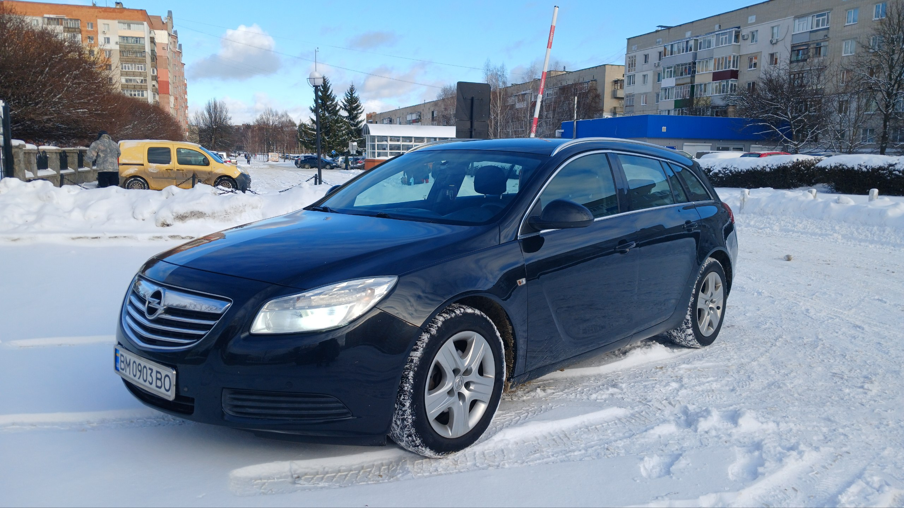

УНІВЕРСИТЕТ (ЛОГО)

Рис. 1. Об'єкт дослідження: Opel Insignia 2.0 CDTi
Короткий опис
Робота присвячена розробці системи підтримки прийняття рішень для вибору оптимального авто на вторинному ринку України з використанням методу аналізу ієрархій (AHP).
Мета дослідження
Обґрунтування вибору автомобіля за допомогою математичного методу аналізу ієрархій для мінімізації економічних витрат.
Основні завдання
- Аналіз ринку вживаних авто (сегмент Opel Insignia).
- Визначення ключових техніко-економічних показників.
- Формування матриці порівнянь критеріїв.
- Розрахунок пріоритетів варіантів вибору.
Очікувані результати
Створення алгоритму, що дозволяє обрати найбільш вигідний автомобіль за показниками ціни, витрати палива та надійності.
Контактна інформація
Автор: Стас Куліжка
Email: staskulizhka@gmail.com